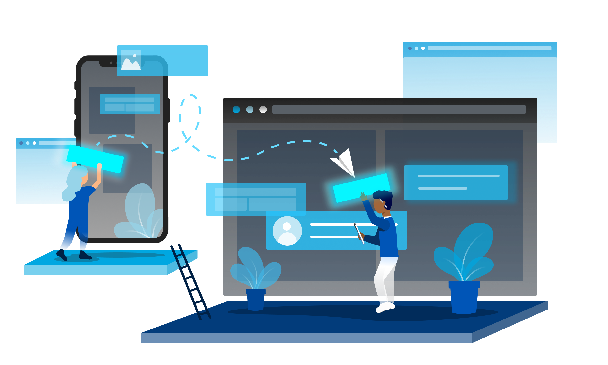

Atom - UBC Applied Science design system
How we created UBC APSC's visual language for building accessible and intuitive websites.

Project details
Team: Reginald Sacdalan - Web & Digital Communications Manager, Tony Wu - Developer, Lua
Presidio - Digital Marketing Assistant, Jessica del Rosario - UX/UI Designer & Project Manager
Role: UX/UI Designer, Illustrator, Project Manager
Tools: Figma, Qualtrics surveys, Jira
Timeframe: 2 months
Product: Atom - UBC APSC design system (implementation still in progress)
Background
Atom, UBC Applied Science’s design system, is a visual language that provides guidelines for UX, UI and development, ensuring that products are both accessible and intuitive. This design system helps cross-functional teams collaborate to create an engaging experience for the APSC audience. The name ‘Atom’ represents how our design system contains the basic building blocks needed to create our websites, similar to how atoms are the necessary building blocks required to create all matter. This concept also stemmed from the Atomic Design Method. (Source)
Project goal
Our goal was to create a central resource of pattern libraries and style guides that can be used to ensure all UBC APSC products are scalable and accessible. This design system was also meant to help designers and developers collaborate in the future, improving our overall team workflow, while still maintaining the common look and feel of UBC APSC’s brand.
Research
In contrast to my previous projects, much of my research for the design system involved looking at the architecture of other design systems such as Polaris from Shopify, Primer from Github, Material from Google, and Atlassian. Based on the content in the pattern libraries and style guides I saw, I began to take inventory of what UBC Applied Science already had and what was missing. I organized these elements into groups through a card sorting process as this would later help in defining our information architecture.
I also tested the accessibility of the design systems mentioned previously and took inspiration from
the strongest aspects of each to build Atom. In doing so, I refreshed my knowledge on the WCAG 2.0 to ensure that all elements of
our design system aligned with accessibility guidelines, which helped me to write out the Design
Principles section of Atom as well as guidelines for future designers on our Confluence
page.
Here’s a surface-level look into the iterative process that we took to design our web layout:
Design
I communicated with our developers, Web and Digital Communications coordinators, marketing coordinators and more to ensure that our design system encompassed the needs and values of UBC Applied Science. I familiarized myself with our current online platform, and made suggestions for improvement based on what I observed in terms of both appearance and usability.
I aimed to make Atom as intuitive and accessible as possible, since I wanted to prioritize ensuring that any APSC faculty or audience member could use it with ease.

I also created illustrations following the brand guidelines for our design system, adding a visual element to text-heavy pages in order to make them easier to digest while also keeping the user's attention.
Another important part of this design system was the scaleable component and style library I created in Figma (still in progress, as we are still continuing to update the design of our website). This library holds all of our design system styles and components, allowing us us to maintain consistent typography, color scheme, components, spacing, and more across all of our design files. I designed each component to be scalable for both mobile, desktop, and tablet views.
Challenges + What I learned from them
A challenge I faced here was learning how to manage a project for the first time. With no previous experience leading a project, I learned both through independent research and by improving on my past mistakes. As both a project leader and designer, I learned how to communicate between roles effectively and create a simple yet effective way of transitioning from the design to development stage.
Another big challenge I faced was maintaining the APSC branding while still making tweaks to it at the same time, to create a pattern library with the finalized components. The fact that we were undergoing a rebranding while creating the design system made this project a bit more complicated, so efficient communication and organized workflow were crucial. I learned the importance of tracking individual tasks from the beginning of the research process, all throughout the design and development process, as many components would go through multiple iterations at different paces before becoming finalized. Tracking the individual progress of each task allowed us to see what needed to be reviewed, what was in progress, and what was ready to be published.